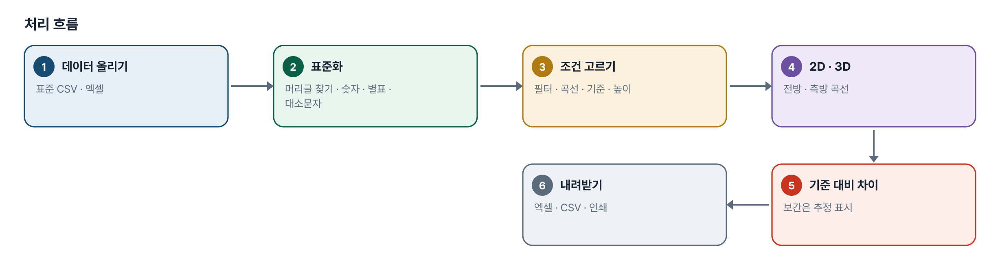
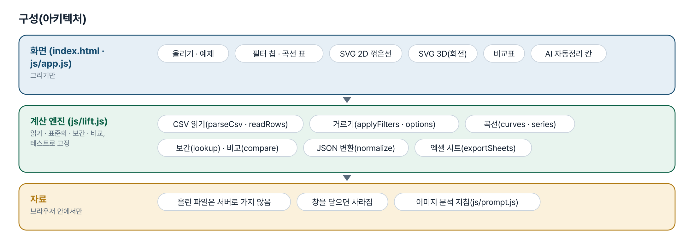
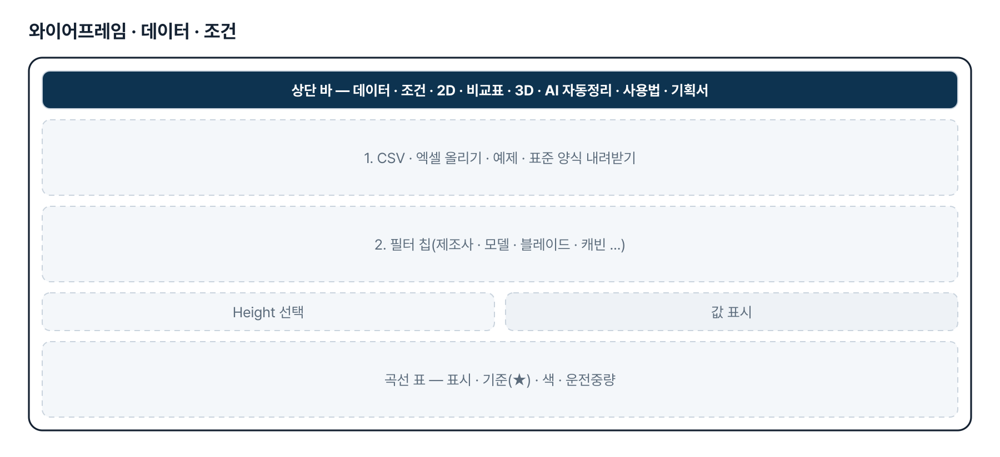
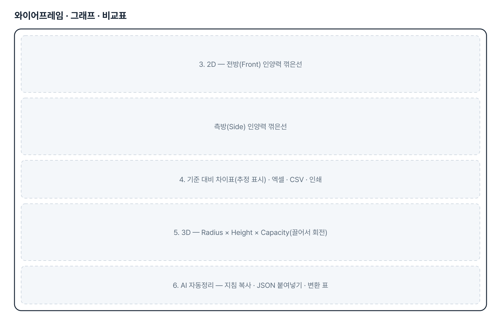
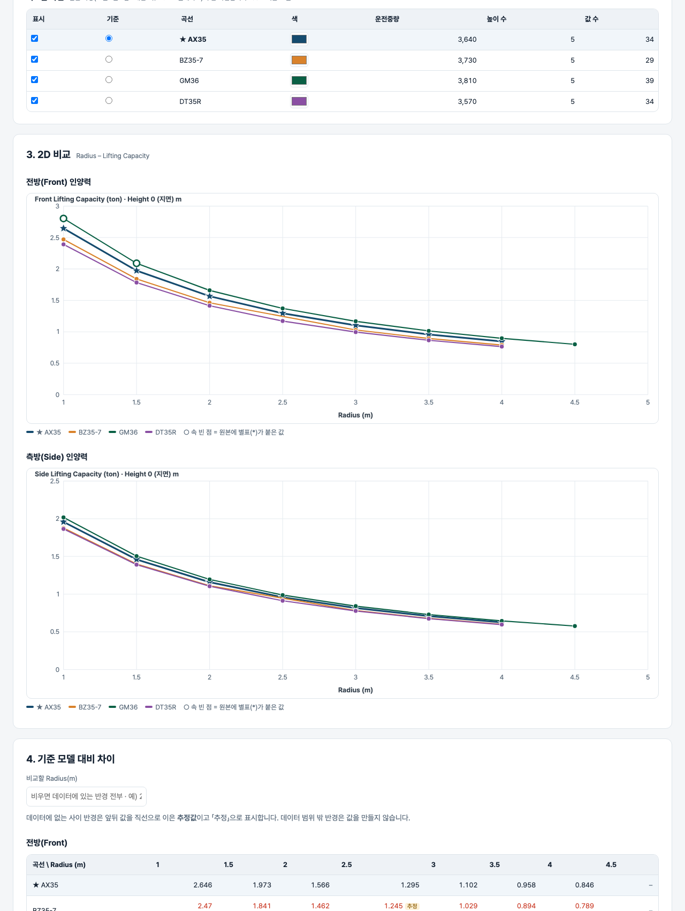

기획서 내려받기
파이프라인 · 아키텍처 · 와이어프레임 · 개발일지가 들어간 워드 문서입니다. 버전마다 따로 남깁니다.
| 버전 | 날짜 | 바뀐 점 | 파일 |
|---|---|---|---|
| v1.0 | 2026-11-13 | 기획자의 V6 프로그램(Streamlit)을 웹 판으로 옮김 — 표준 CSV 읽기 · 필터 · 2D · 3D · 기준 대비 차이 · 엑셀 · AI JSON 변환 | 워드 내려받기 |
요구사항과 구현
| 기획서 요구 | 구현 |
|---|---|
| 자사 · 경쟁사 표준 CSV 업로드 | CSV · 엑셀을 여러 개 올려 이어 붙임. 머리글은 이름으로 찾음(순서 · 대소문자 무관). 못 읽은 줄은 위치와 이유를 알림 |
| 제조사 · 모델 · 블레이드 · 붐/암 · 캐빈 · 슈 · CW 필터 | 항목마다 여러 값을 눌러 고름. 다른 항목 선택에 따라 남는 값만 보임. 값이 하나면 자동으로 정해진 것으로 표시 |
| 기준 모델 설정 | 곡선 표에서 ★ 로 고름. 2D 에서 별 표식 · 굵은 선 |
| Height 선택(0m 기본) | 0m 가 있으면 0, 없으면 0 에 가장 가까운 높이 |
| 2D — Radius–Capacity Front/Side 그래프 | SVG 꺾은선 두 장(전방 · 측방). 값 표시 켜고 끄기, 곡선 색 바꾸기, 별표 값은 속 빈 점 |
| 3D — Radius × Height × Capacity | SVG 로 비춘 곡면(높이별 곡선 + 반경별 연결) · 점 모양. 끌어서 돌림. 모든 높이를 그림 |
| 특정 Radius 에서 기준 대비 차이(%)와 상세 비교표 | 반경을 적으면 그 반경만. 사이 반경은 직선 보간 + 「추정」 표시, 범위 밖은 빈 칸 |
| 엑셀 다운로드(2D Charts · Front Data · Side Data) | Front Data · Side Data · Front 비교 · Side 비교 · Rows 시트. 차트 그림은 넣지 않음(한계) |
| AI 자동정리 — 이미지 인식 → JSON 검토 → 19열 CSV | 이미지 인식은 쓰는 AI 서비스에서(지침 복사 제공). 여기서는 JSON 검증 · 단위 변환 · 옵션 표기 맞춤 · CSV 변환 · 비교로 넘기기. 규칙은 V6 core.py 와 같음 |
| 별표(*) 값 보존 | 값과 분리해 notes 의 STAR_FRONT=1 · STAR_SIDE=1 로 두고, 표 · 그래프 · 엑셀에 표시 |
그림으로 보기





개발일지
2026-11-13 · v1.0 신설
- 패들릿 03 섹션에 기획자가 올린 V6 프로그램 묶음 · 설명서 · 더미 CSV 를 읽고, 같은 기능을 설치 없는 웹 판으로 새 번호(18)에 만듦
- 변환 규칙은 V6 core.py 를 그대로 옮기고, 그 예제 입력 · 출력으로 대조
- API 키가 필요한 이미지 인식은 빼고, 지침 복사 + JSON 붙여넣기 변환으로 대신함